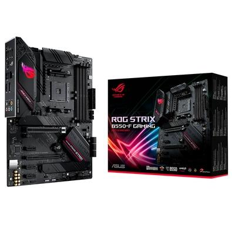
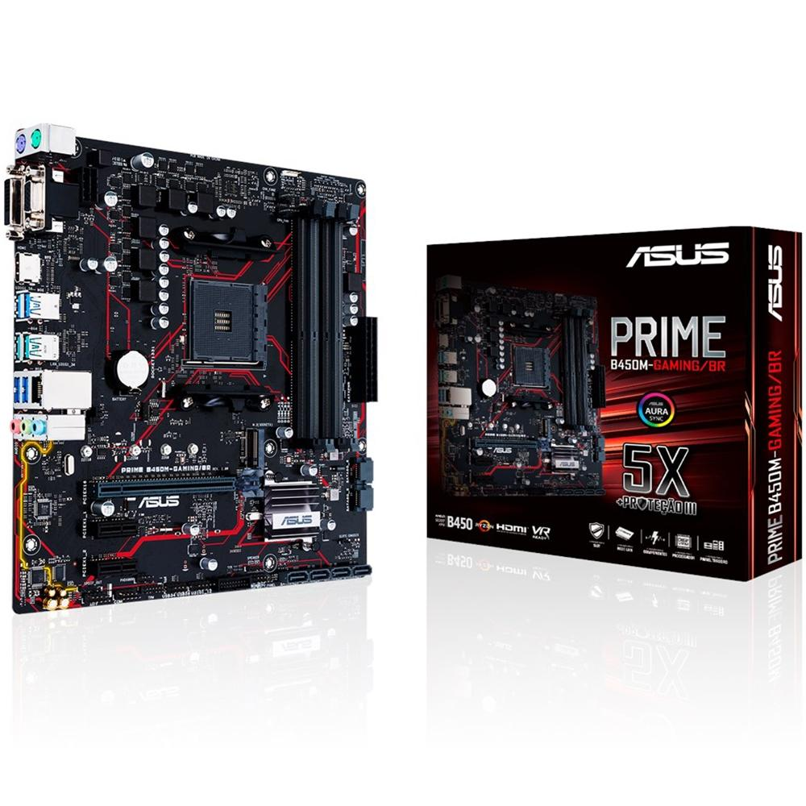
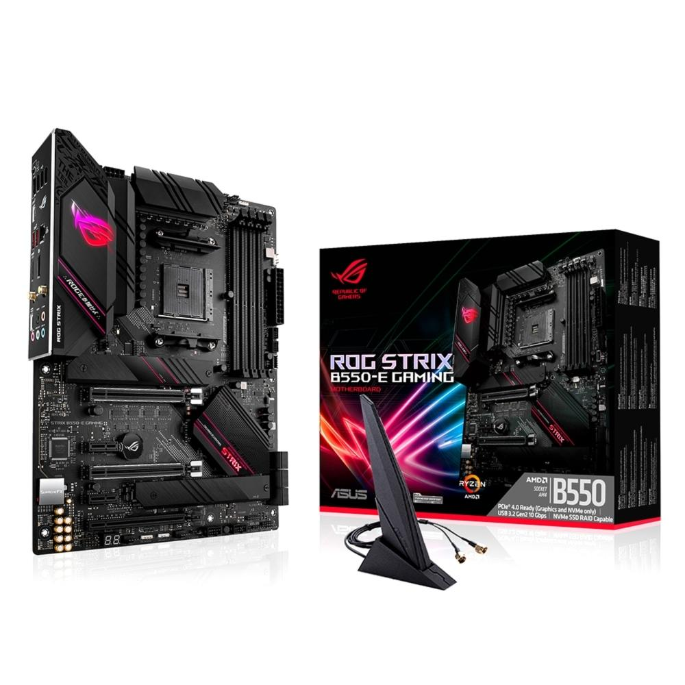
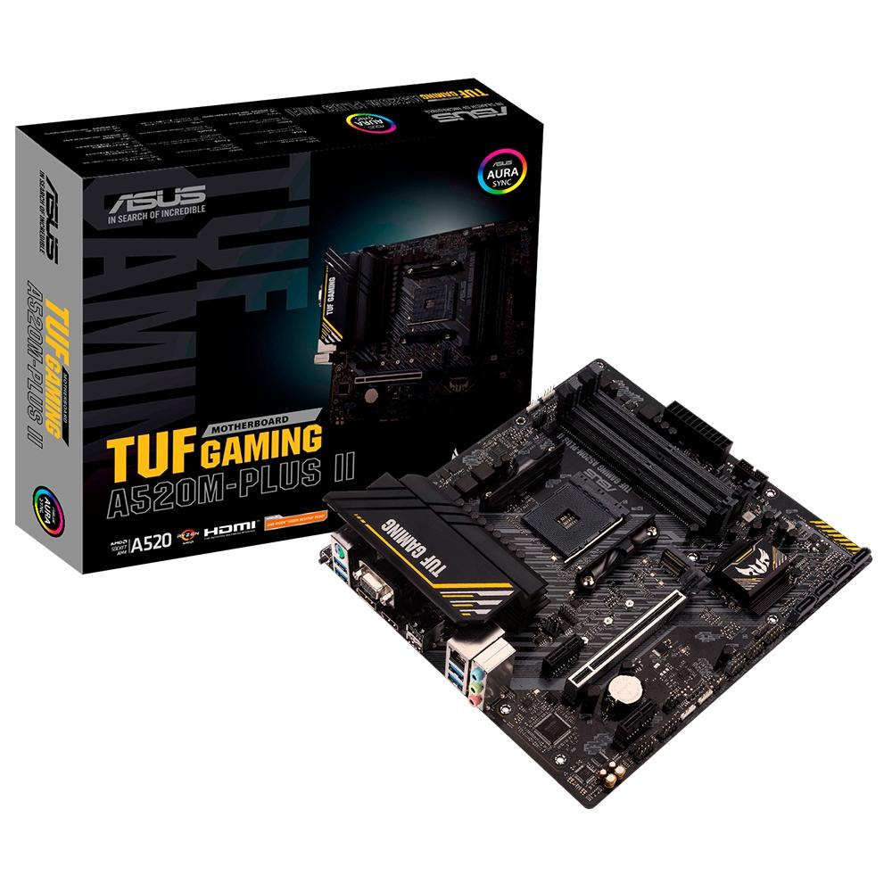
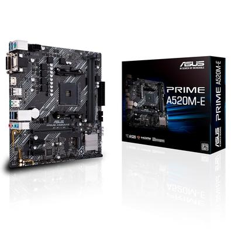
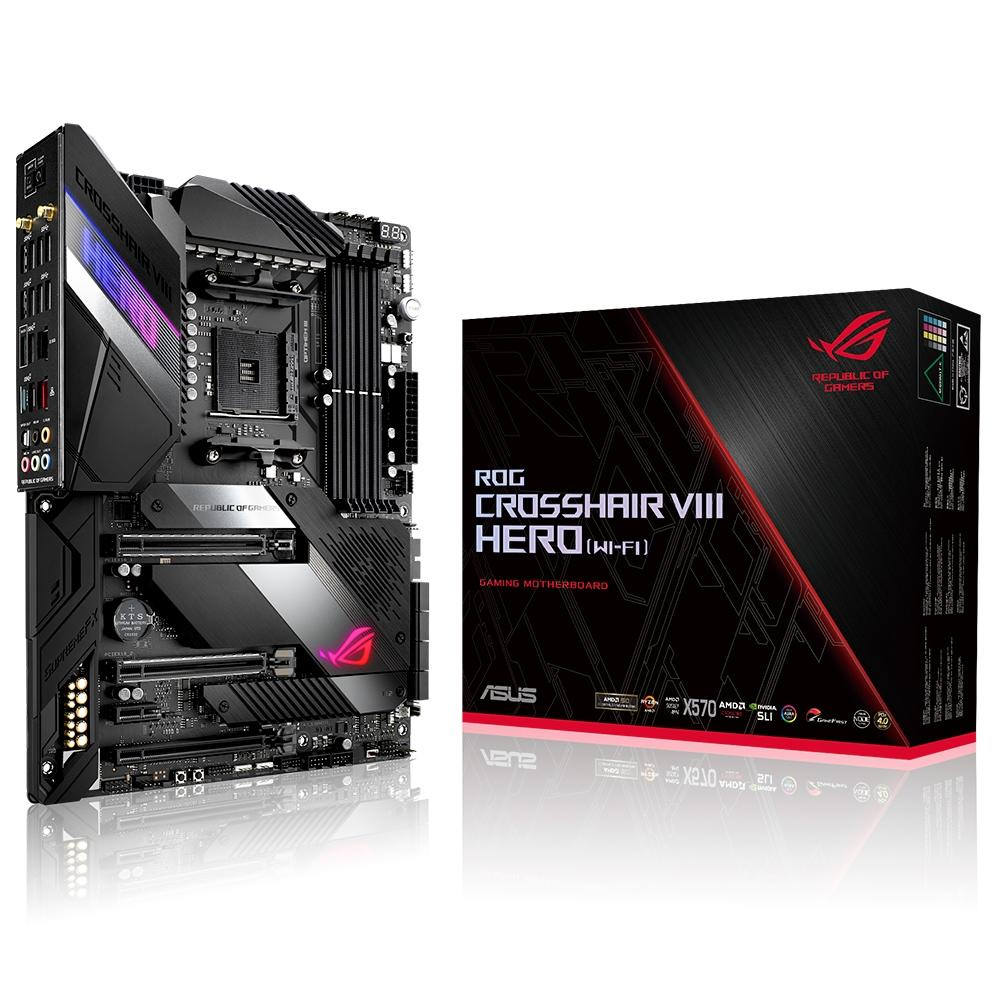
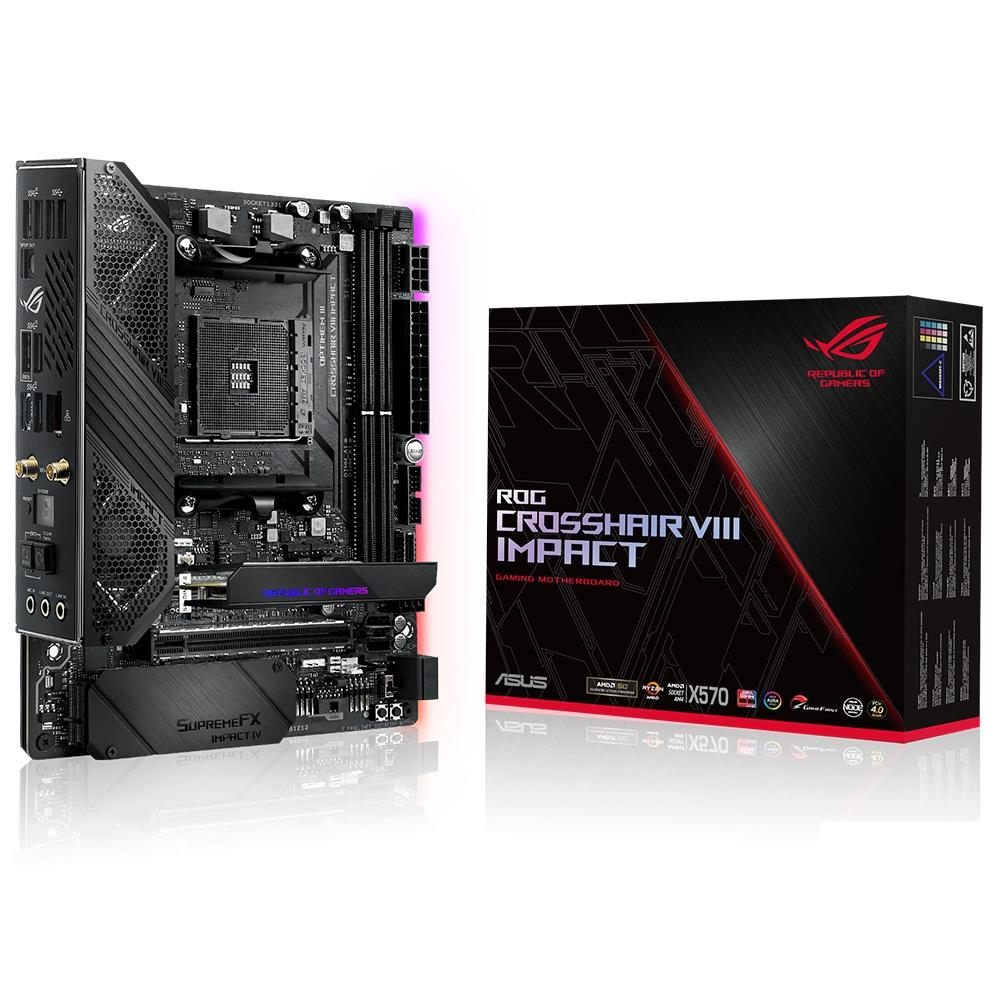

Produtos
-

Placa-Mãe Asus ROG Strix B550-F Gaming, AMD AM4, ATX, DDR4
R$ 1.729,90
As placas-mãe da série ROG Strix B550 Gaming oferecem um conjunto de recursos geralmente encontrado na série ROG Strix X570 Gaming de ponta, incluindo a mais recente PCIe 4.0. Com entrega de energia robusta e resfriamento eficaz, o ROG Strix B550 Gaming está bem equipado para lidar com CPUs AMD Ryzen de 3ª geração. Com estética futurista e software ROG intuitivo, o ROG Strix B550-F Gaming oferece uma vantagem inicial na construção dos seus sonhos.
-

Placa-Mãe Asus Prime B450M Gaming/BR, AMD AM4, mATX, DDR4
R$ 589,90
Placa-Mãe Asus Prime B450M Gaming/BR AMD DDR4 As placas-mãe ASUS Prime Série B450 fornecem uma base sólida para um sistema eficiente, além de características que satisfazem as suas ambições. Combinamos excelentes recursos integrados nos processadores AMD Ryzen™ com o design e a engenharia essenciais da ASUS, para que você se beneficie das tecnologias líderes do setor, incluindo ajuste automatizado do sistema, controles abrangentes de refrigeração e áudio integrado na placa. Quando você monta um PC com uma placa-mãe ASUS Prime B450M, você monta de maneira inteligente, fácil e econômica.
-
Placa-Mãe Asus TUF Gaming B550M-Plus, AMD B550, mATX, DDR4
R$ 1.059,90
Placa-mãe Asus TUF Gaming B550M-Plus AMD DDR4 A TUF Gaming B550M-PLUS reúne os elementos essenciais da mais recente plataforma AMD e os combina com funcionalidades prontas para jogos e durabilidade comprovada. Projetadas com componentes de nível militar, soluções de energia aprimoradas e um conjunto abrangente de opções de refrigeração, essas placas-mãe oferecem desempenho sólido com estabilidade inabalável em jogos. Soquete AMD AM4 Pronto para processadores AMD Ryzen™ de 3ª geração.
-

Placa-Mãe Asus Prime A320M-K/BR, AMD AM4, mATX, DDR4
R$ 399,90
A Placa-Mãe Asus Prime A320M-J/BR AMD DDR4 A ASUS Prime é a próxima evolução das placas-mãe ASUS, criada com base em uma grife que remete a 1989. Esta é a força por trás do desenvolvimento da Prime - deixar o avanço tecnológico e os controles mais acessíveis maximizando performance, estabilidade e compatibilidade para que a montagem do seu PC seja uma ótima experiência.
-

Placa-Mãe Asus ROG Strix B550-E Gaming, AMD AM4, ATX, DDR4
R$ 2.199,90
As placas-mãe da série ROG Strix B550 Gaming oferecem um conjunto de recursos geralmente encontrado na série ROG Strix X570 Gaming de ponta, incluindo a mais recente versão PCIe 4.0. Com entrega de energia robusta e refrigeração eficaz, a ROG Strix B550 Gaming está bem equipado para lidar com CPUs AMD Ryzen de 3ª geração. Com estética futurista e software ROG intuitivo, a ROG Strix B550-E Gaming oferece uma vantagem no desenvolvimento dos seus sonhos.
-

Placa Mãe Asus TUF GAMING A520M-PLUS II, AMD AM4, mATX, DDR4 - 90MB17G0-M0EAY0
R$ 599,90
Placa-mãe para jogos AMD A520 (Ryzen AM4) micro ATX com suporte para M.2, DisplayPort, HDMI, D-Sub, portas USB 3.2 Gen 1, SATA 6 Gbps e headers endereçáveis ??AURA Gen 2 Soquete AMD AM4: Pronto para processadores de mesa Ryzen 5000 Series / 4000 G-Series / 3000 Series Desktop Processors. Resfriamento abrangente: Grande dissipador de calor VRM, dissipador de calor PCH, Fan Xpert 2+. Feito para jogos online: tecnologia TUF LANGuard e TurboLAN. Aura Sync RGB: headers RGB integrados e headers Gen 2 endereçáveis ??para tiras de LED RGB, facilmente sincronizados com hardware compatível com Aura Sync.
-

Placa-Mãe Asus Prime A520M-E, AMD AM4, mATX, DDR4
R$ 439,90
A série ASUS Prime foi projetada para liberar todo o potencial da plataforma AMD Ryzen de terceira geração. Com design robusto de energia, soluções abrangentes de refrigeração e opções de ajuste inteligentes, as placas-mãe da série Prime A520 fornecem aos usuários cotidianos e construtores de PC várias opções de ajuste de desempenho por meio de recursos intuitivos de software e firmware. Controles abrangentes formam a base da série ASUS Prime.
-

Placa-Mãe Asus TUF Gaming X570-PLUS/BR, AMD AM4, ATX, DDR4
R$ 1.349,90
A placa-mãe Asus TUF Gaming X570-PLUS/BR AMD DDR4 A TUF Gaming X570-Plus reúne os elementos essenciais da mais recente plataforma AMD e os combina com funcionalidades prontas para o jogo e durabilidade comprovada. Projetadas com componentes de nível militar, soluções de energia aprimoradas e um conjunto abrangente de opções de refrigeração, essas placas-mãe oferecem desempenho sólido com estabilidade inabalável em jogos. Soquete AMD AM4 Pronto para os processadores AMD Ryzen™ de 2a e 3a geração. Enhanced Power Solution 12+2 Estágios de potência Dr. MOS, PCB de 6 camadas, soquetes ProCool, componentes TUF de nível militar e VRM Digi+ para máxima durabilidade.
-

Placa-Mãe Asus ROG Crosshair VIII Hero (WI-FI), AMD AM4, ATX, DDR4
R$ 3.799,90
Soquete AMD AM4: Teste para AMD Ryzen 2ª e 3ª Geração e até duas unidades M.2, USB 3.2 Gen2 e AMD StoreMI para maximizar a conectividade e a velocidade. Projeto térmico completo: Dissipador de calor ativo no chipset, dissipador de calor de alumínio M.2 e ROG Cooling Zone. Potência robusta: Solução de energia projetada com 14 + 2 PowIRstages IR3555, conectores de alimentação ProCool II, liga bloqueia microfinos e capacitores 10k metálicos pretos feitos no Japão. Rede de alto desempenho: Wi-Fi integrado 6 (802.11ax) com suporte a MU-MIMO, Ethernet 2.5Gbps e Gigabit Ethernet, recursos de proteção ASUS LANguard e suporte para software GameFirst V.
-

Placa-Mãe Asus ROG Crosshair VIII Impact, AMD X570, Mini-DTX, DDR4
R$ 2.899,90
Placa-Mãe Asus ROG Crosshair VIII Impact Soquete AMD AM4: pronto para processadores AMD Ryzen de segunda e terceira geração e até duas unidades M.2, USB 3.1 Gen2 e AMD StoreMI para maximizar a conectividade e a velocidade. SO-DIMM.2: a placa de expansão integrada com dissipador de calor permite que duas unidades M.2 sejam conectadas por meio de uma interface SO-DIMM e ajuda a controlar as térmicas do SSD para obter o máximo desempenho. Design térmico abrangente: Um dissipador de calor combinado VRM e chipset ativo e uma placa traseira de alumínio com tubo de calor adicionam massa para ajudar a absorver mais calor.